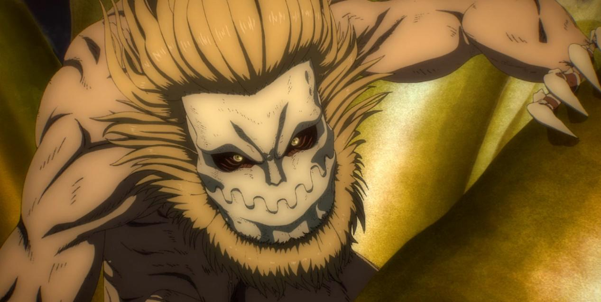

顎巨人
顎巨人（日語：顎の巨人，英譯：Jaw Titan）
身高為7公尺，體型小但動作靈敏，臉部皮膚與指甲、指背部分覆蓋了硬質化，可以抵擋子彈砲火攻擊，同時也具備有強大的殺傷力。使用銳利的爪和下顎當作武器，其銳利程度高於硬質化能力，是目前已知唯一可以破壞水晶化的巨人。另外，因目前的持有者法爾可‧葛萊斯攝取了野獸巨人持有者吉克·葉卡的脊隨液而擁有翅翼，能在天空中翱翔。
原為馬賽·賈利亞德所持有，被尤米爾吞噬繼承（尤米爾所變之顎巨人有語言能力），後來尤米爾自願歸還給瑪雷政府，由波爾柯‧賈利亞德繼承，目前的持有者為法爾可‧葛萊斯。
曾經持有者：

